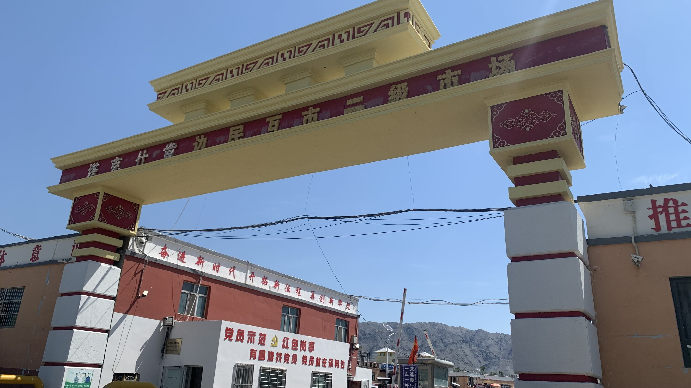
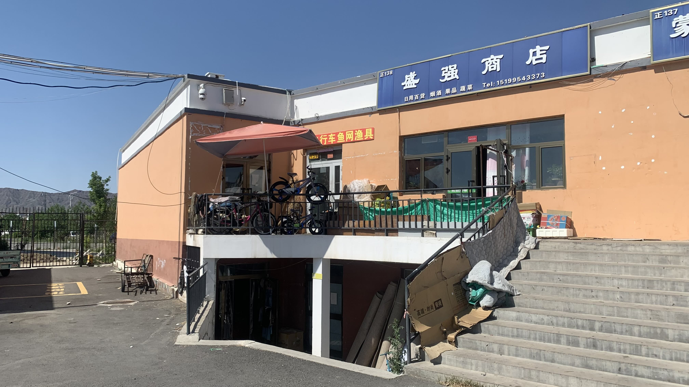

k-Day 120｜動物與植物的組合
網站日誌已經一個月沒上傳了。進入新疆後 GitHub 完全打不開，決定放棄，如此一來必須好好保護電腦和檔案們才行。
躺在床上發呆，將記憶卡中的檔案都傳到硬碟裡。滑著 Maps.me 地圖，附近竟出現自行車行的標示，感謝前人。這就出門買鏈條油。
牽車出門時酒店老闆瞄了一眼，說：「哇！這車擦得這麼亮！」
心中暗自竊喜，我可是擦到凌晨三點呢！

問了酒店老闆車行方向，來到一處叫「邊民互市二級市場」的大院。

角落放著幾輛自行車。老闆不在，隔壁盛強商店的老闆出來閒聊。問了年紀後，老闆說：「你出來玩孩子呢？」相當婉轉的問句。
車行老闆回來後幫我看了看車子，借了一瓶鏈條油滴上。老闆問我怎麼知道這裡有車行？
「外國的地圖上有人標記了你的店。」
「就是上次那個人嘛！先前還有個台灣的，鏈條斷了，幫他叫了車載到城裡換鏈條。」
看來老闆還兼做佛心事業。
牽車回酒店後又試著上傳日誌，經過兩小時無數次斷網，終於成功上傳了十張照片。累積了一個月的日誌究竟要多久才能成功上線呢？
明天早上要到公安局確認往青河辦理邊防證的資訊，網上說法是可以到青河縣辦理，但是在沒有取得邊防證的狀況下可否獨自前往仍不得而知。
這種證件難道不該在口岸現場設置個辦理櫃檯嗎？
今日花費： 飲料 17、住宿 100元